협동조합 가시광선VISIBLERAY
전시 기획 · 행사 운영 · 디자인 · AI 영상
Growth
기획전시와 박물관 개선 사업, 원로 작가 전시, 지역 공연과 아트마켓, 그리고 작가 아카이브 플랫폼까지. 전시를 넘어 시민이 직접 참여하는 문화로 영역을 넓혀 왔습니다.
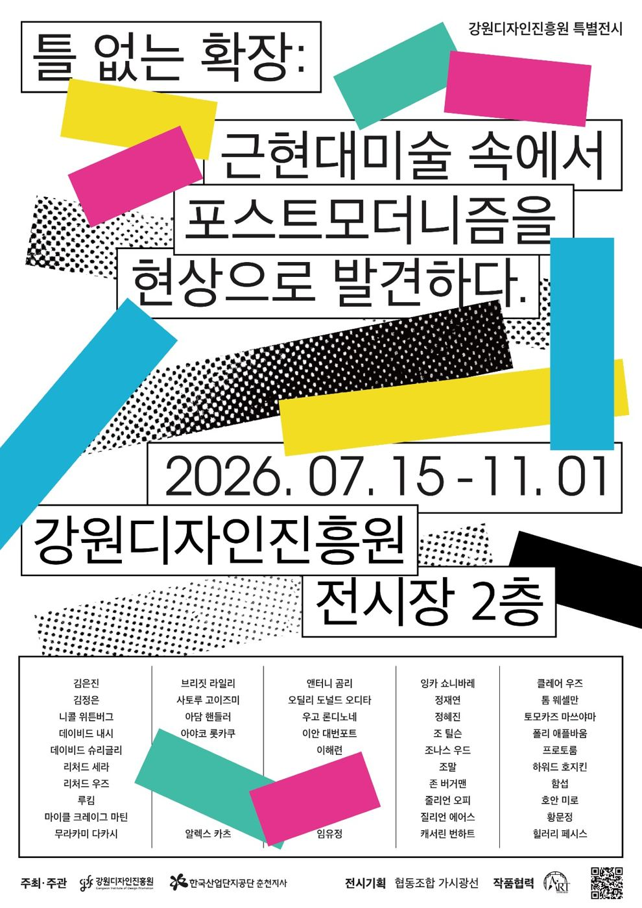
2026틀 없는 확장강원디자인진흥원 기획전시 — 작품 110점, 기획부터 운영까지
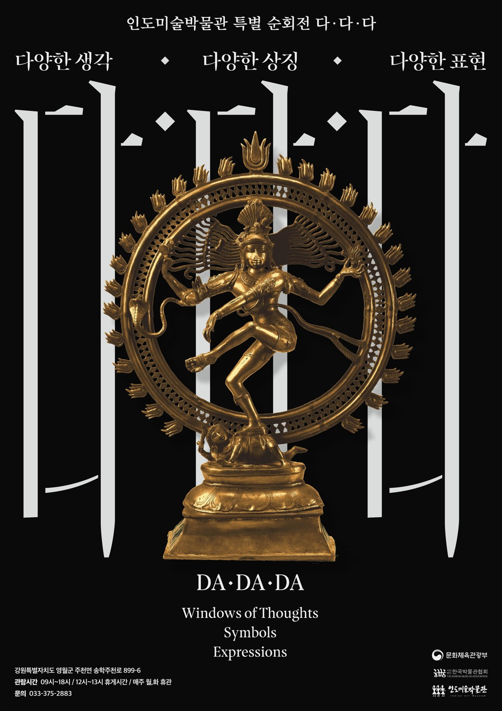
2026영월 인도미술박물관K-뮤지엄 「뮤지엄 이음」 사업으로 박물관 개선 사업 완수
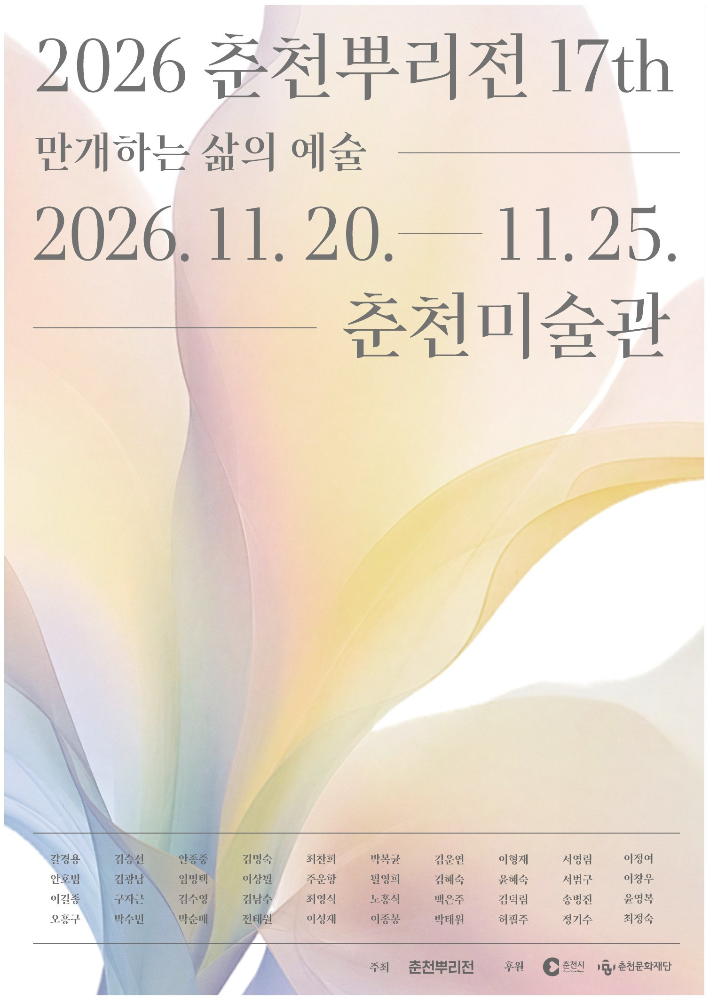
2024–2026춘천 뿌리전아카이브 노하우로 춘천 원로 작가 전시를 3년 연속 기획·진행
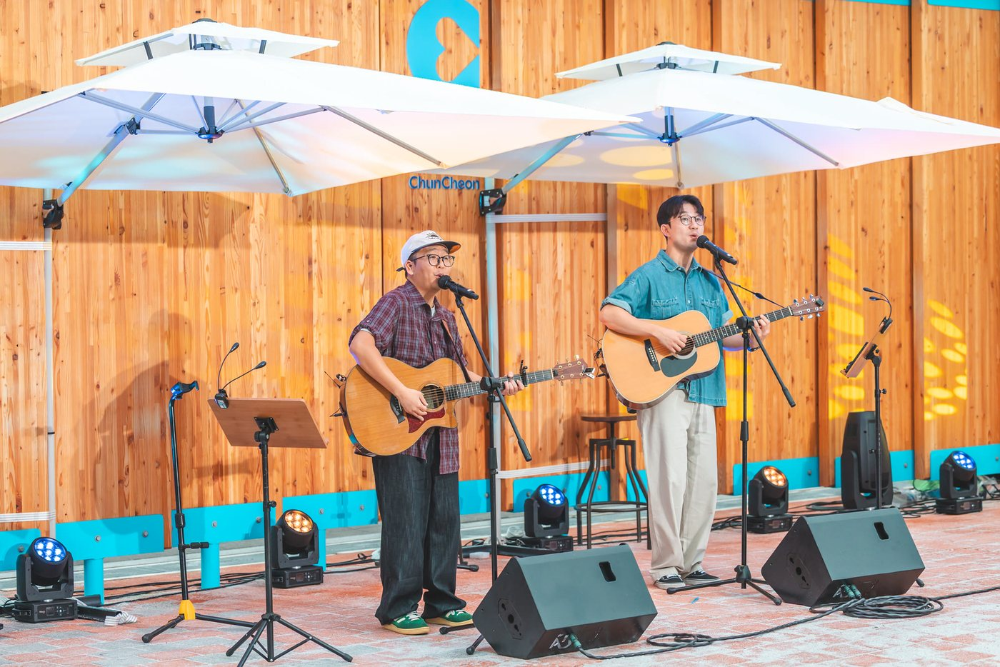
2026노닐섬지역 공연예술 행사를 직접 기획해 성사
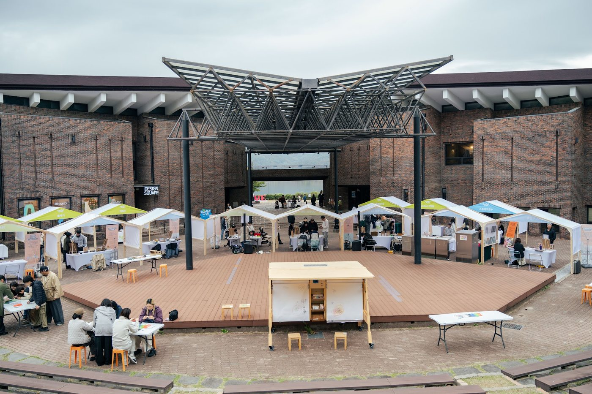
2025–2026플리플라 아트파크춘천예술촌과 공동기획한 아트 플리마켓. 2025년에 이어 2026년 3회 개최, 예술가의 새로운 시장 개척
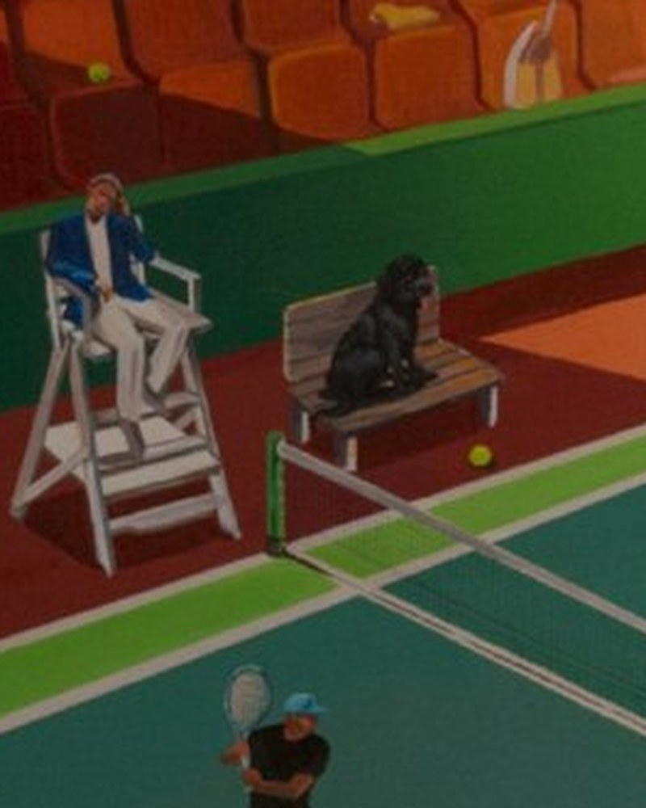
2025아티스트 프롭 — 지역예술 아카이브작가 주도형 디지털 수장고. 총괄이사 강승원 특허출원, IP나래 사업 선정
연혁
| 2022 | 11.11 협동조합 가시광선 설립 (춘천) |
|---|---|
| 2023 | 제1회 춘천아트페어 단독 기획·운영 |
| 2024 | 춘천 뿌리전 · 2024 춘천아트페어 아르로드 공동주관 · 이상원미술관 개관 10주년 기념전 도록 · 김현식 기증특별전 |
| 2025 | 춘천 뿌리전 · 아티스트 프롭 특허출원 · IP나래 사업 선정 · 베타 서비스 오픈 플리플라 아트파크 첫 개최 · 광복 80주년 특별기획전 · 2025 강원디자인전람회 |
| 2026 | 코레드 · 원주 원더플레이트 AI 홍보영상 · 노닐섬 · 플리플라 아트파크 3회(6·8·10월) 틀 없는 확장 · 기억을 그리다 · 다다다(문경·영월 순회) · 켜 LAYER · 모두의 미술 · 춘천 뿌리전(3회째) 영월 인도미술박물관 「뮤지엄 이음」 개선 사업 · 세종 지사 입주(홍익대 세종캠퍼스) |
Archive
AI Visual
생성형 AI를 활용해 소장품 사진과 실사 촬영본, 3D 데이터를 움직이는 영상으로 만듭니다. 원본의 형태와 디테일은 그대로 두고, 전시장 미디어월부터 홍보 현장까지 상영되는 영상을 제작합니다.
제작 방식
제작 중 — 퓨전국악 공연 《안개 속 풍류》 무대영상 · 케이락컴퍼니 · 음악 분석 기반 공간 맞춤 영상
Archive Lab
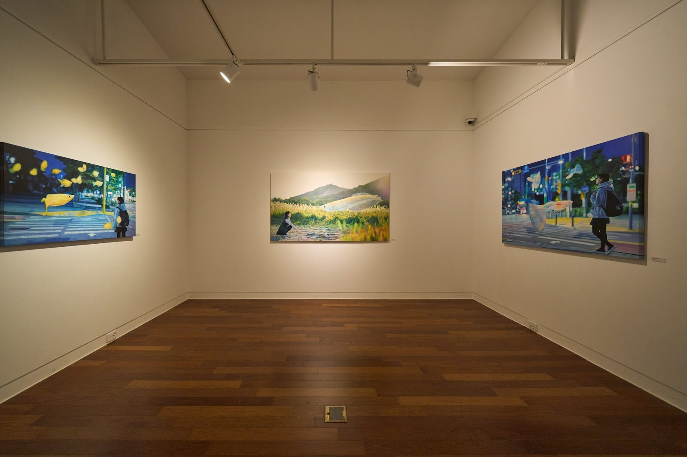
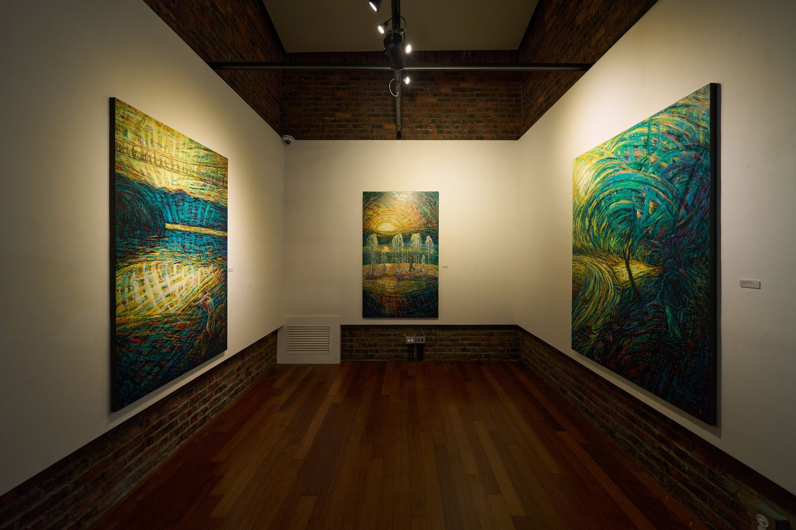
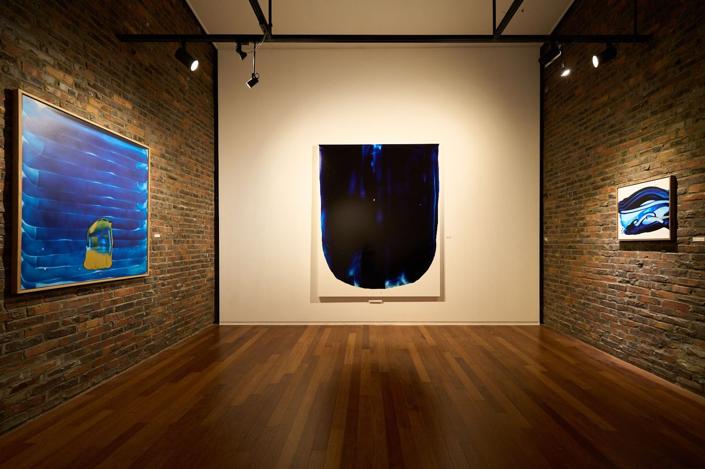
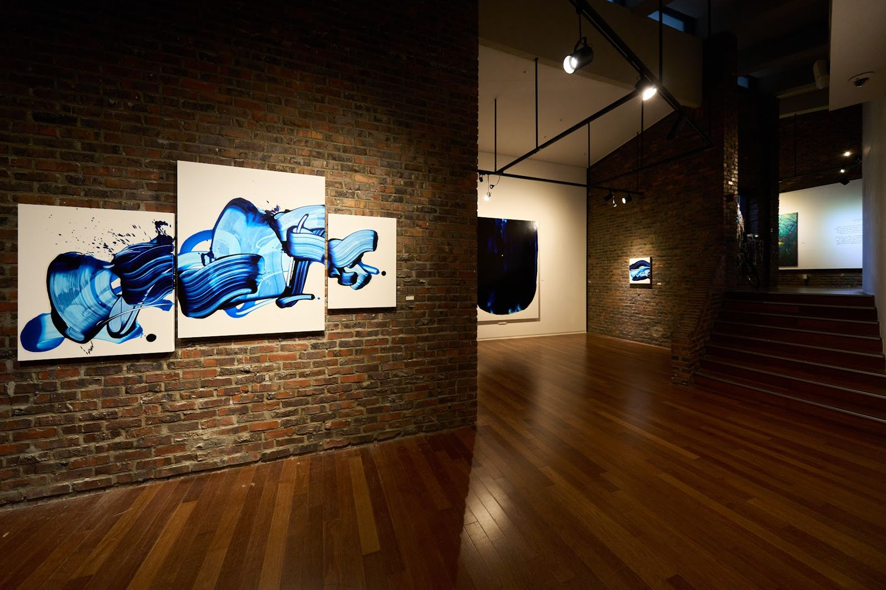
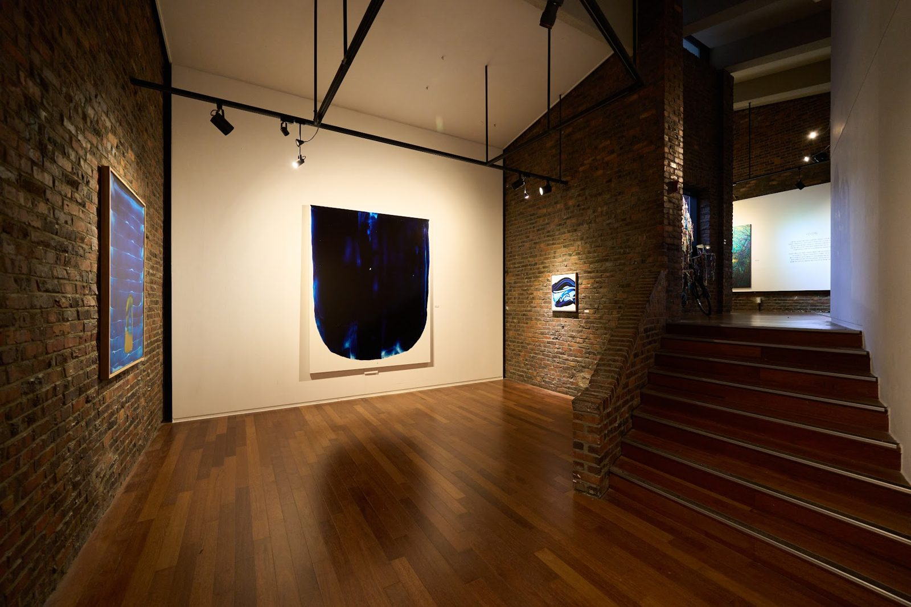
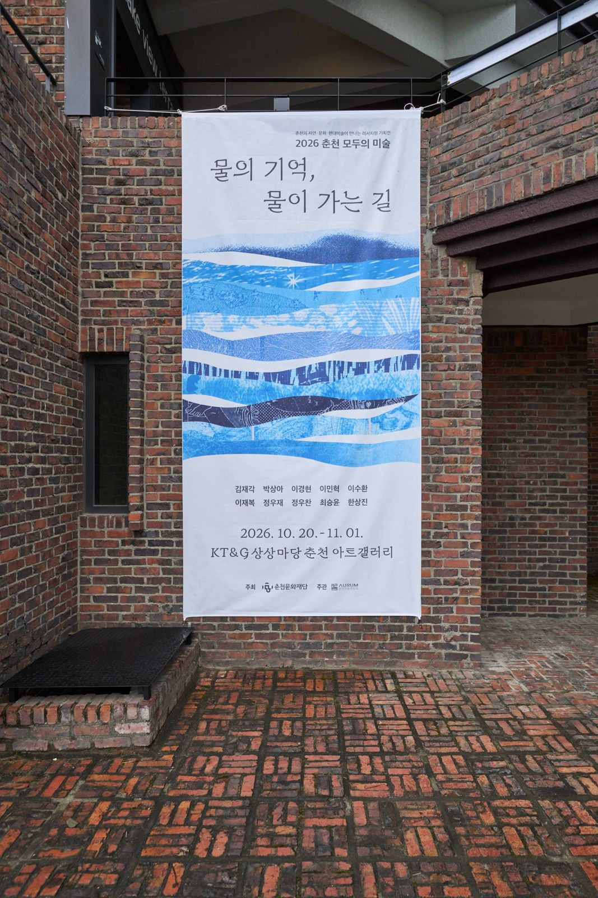
KT&G 상상마당 춘천 · 전시 운영, 참여 작가 10명 아카이브 영상, 무빙 포스터
작업실 촬영과 인터뷰, 작가별 아카이브 영상 제작
Vision 2027
지자체의 공적자금만으로 열리는 축제가 아니라, 작가의 판매와 시민의 참여가 기부금으로 쌓여 스스로 커지는 축제. 그것이 가시광선이 만들고 있는 다음 무대입니다.
FLEEFLA ART CULTURE FESTIVAL플리플라 아트컬쳐페스티벌
아티스트 프롭을 지역 예술가의 표준 아카이브 플랫폼으로
세종시에 가시광선만의 아트컬쳐페스티벌 유치
공적자금과 함께, 시민이 즐기며 참여하는 도네이션 모델
Team
보유 등록·확인
산업디자인전문회사 신고 · 여성기업 확인 · 직접생산확인(전시회, 인쇄출판)
옥외광고사업 등록 · 출판사 신고 · 비디오물제작업 신고
협력 기관·기업